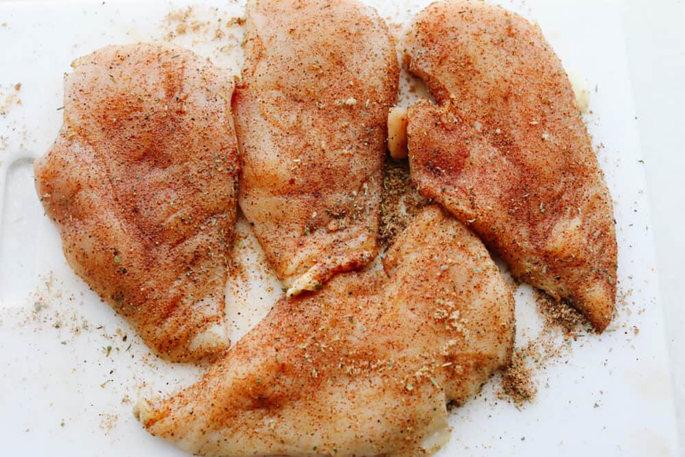

This arroz con pollo is an easy chicken and seasoned rice dish that's comforting and delicious. Easy to adjust to use chicken thighs, or leftover chicken.
| Step 1 | Step 2 |
|---|---|
|  | |
|
Season chicken with a 1/4 teaspoon of salt, 1/4 teaspoon pepper, and 1/4 teaspoon paprika. |
Heat oil in a large skillet over medium heat. Add seasoned chicken; cook and stir until no longer pink in the center and golden brown on all sides, about 10 minutes. Transfer chicken onto a plate; set aside. |
| Step 3 | Step 4 |
|
Add green pepper, onions, and garlic to the same skillet; cook and stir for 5 minutes. Add rice; cook and stir until rice is opaque, 1 to 2 minutes. Stir in broth, tomatoes, white wine, and saffron. Stir in remaining 1/4 teaspoon salt, 1/4 teaspoon pepper, and 1/4 teaspoon paprika; bring to a boil, cover, and simmer for 20 minutes. |
Add chicken and stir until heated through. Stir in parsley and serve. |